DataMapper Example: Fixed-Width Input Format
|
DataMapper will continue to be fully supported in all current and future versions of Mule ESB 3.x, however it will be removed in Mule 4.0 in favour of the Transform Message component (based on DataWeave code). We recommend that if you wish to take advantage of the new capabilities of DataWeave or if you start new projects, upgrade now. A migration tool is now included in Studio, which assists in converting a DataMapper map to DataWeave. Right click on a DataMapper, select Migrate to DataWeave, and follow the instructions. 
If you don’t see DataMapper on your palette, you can enable it by going to Preferences → Anypoint Studio → Palette Profiles and ticking the checkbox Show deprecated Mule Components and Attributes. |
Anypoint DataMapper can organize data into fixed-width columns, allowing for data extraction using the width value for each column. Reading data in fixed-width format, DataMapper can separate the appropriate fields according to user-provided field length values (see example below).
This document illustrates two simple examples that map values from fixed-width data format to JSON.
-
Where there are unused characters within a field, DataMapper applies padding.
-
Optionally, the input format may contain a header in the first line.
lastName~~~~~~firstName~~~~~~customerID~
Doe~~~~~~~~~~~John~~~~~~~~~~~41164794149
Doe~~~~~~~~~~~Jane~~~~~~~~~~~79251226021Fixed-width to JSON Example Flow
The following image illustrates a very simple Mule flow which includes a DataMapper transformer. The first building block, a File Connector, reads the fixed-width input file. Then, DataMapper transforms the data into the JSON format, and outputs the result into a second file.
To test the mapping, you can build this flow in Studio, then run the application and check the results in the output file. Alternatively, you can build this flow, then can use DataMapper’s Preview feature to view the mapping without running the application.
-
Configure the values used for the file inbound and outbound connectors in the flow as per the following:
Inbound connector Path
/tmp/File Name Regex Filter
fwtestOutbound connector Path
/tmpFile Name Regex Filter
fwout.json -
Create a Fixed-Width Input File: create a new text file (.txt), then paste into it the contents shown below. Make sure to include an empty line after the last line in the file, as DataMapper uses the end-of-line character (carriage return) as an input field delimiter.
LastName FirstName Phone CountryEmployeeNo Jane Doe 54112223333ARG001 John Doe 54112223333ARG002 -
Save the file to a convenient location on your local drive. To see the DataMapper perform the transformation, you will eventually copy this file to
/tmp/fwtest. -
Create the JSON sample file that that DataMapper uses as the template for converting data to JSON. Create the file and paste into it the following contents:
[{
"FirstName": "",
"LastName": "",
"Phone": "",
"Country": "",
"EmployeeNo": ""
}]Configuring DataMapper Input
-
Click the DataMapper building block on the canvas to display the DataMapper properties editor.
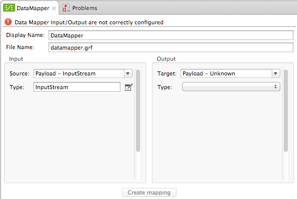 -
In the Input section, click the Edit icon
 next to the Type input field, then select Fixed Width from the Type drop-down menu. The properties editor Input pane displays the input options for the fixed-width format, as shown below.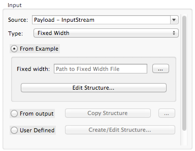
next to the Type input field, then select Fixed Width from the Type drop-down menu. The properties editor Input pane displays the input options for the fixed-width format, as shown below.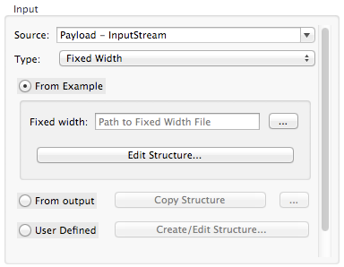 -
The default option, From Example, allows you to use an input file for determining input field properties (field names and width). The User Defined option allows you to manually define the input fields. In this example, we will use the input file described above so that DataMapper automatically configures the fields.
-
Use the ellipses button (…) next to the Fixed width field to select the fixed-width input file on your local drive (alternatively, you can type the full path to the file in the Path to Fixed Width File input field).
-
After you have selected your input file, click Edit Fields. DataMapper displays the Define the Fixed Width panel. The image below illustrates how DataMapper reads the input file. DataMapper has correctly guessed the width of all fields, and the names of the first three fields. The last two fields have the correct width values, but we must edit the names.
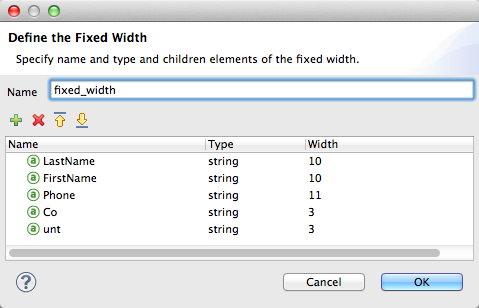 -
To edit a field, click the field attribute you wish to edit (the name, type or width), then adjust the content and click OK. For this example, change the names of the last two fields to their appropriate values:
CountryandEmployeeNo.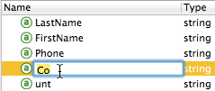
|
DataMapper accepts several input field types, including string, date, boolean, etc. To define the type for a field, click the field’s type and select the desired type from the drop-down menu.
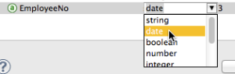
|
Configuring DataMapper Output
-
In the Output section of the Input and Output Type window, use the drop-down menu next to Type to select
JSON. -
Use the ellipses button (…) next to the Fixed width example field to select the JSON output file on your local drive.
If you want DataMapper to automatically generate the output JSON, click Generatedefault in the Output section of the New Data Mapping Flow window.
-
Click Create mapping at the bottom of the DataMapper properties editor. DataMapper displays the graphical mapping editor, shown below.
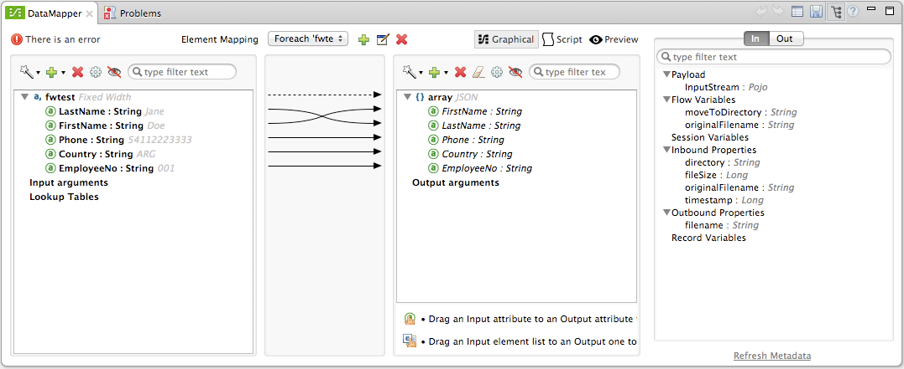
As you can see, DataMapper has automatically mapped the input and output fields, since the field names coincide in the input and output.
Testing the Mapping
To test the mapping, use one of the following procedures.
Run Application
Test by running the example flow:
-
Right-click the project name in the Package Explorer, then select Run as > Mule Application.
-
Copy your fixed-width input file to the directory and filename you specified for the File inbound connector (in this example,
/tmp/fwtest). -
Check for the example output file according to the configuration of the outbound file connector (in this example,
/tmp/fwout.json.
See Preview
DataMapper’s Preview feature allows you to see the result of your mapping without actually running the flow. Test by using DataMapper’s Preview feature:
-
In the DataMapper view, click the Preview tab.
-
In the Preview tab, click Run.
The code below demonstrates the resulting JSON output.
[{
"FirstName" : "Doe",
"LastName" : "Jane",
"Phone" : "54112223333",
"Country" : "ARG",
"EmployeeNo" : "001"
}, {
"FirstName" : "Doe",
"LastName" : "John",
"Phone" : "54112223333",
"Country" : "ARG",
"EmployeeNo" : "002"
}]Using Fixed-Width Column Definitions to Extract Additional Fields
In this additional example, we split an employee’s phone number, originally comprised of 11 digits, into three separate fields:
-
CountryCode -
AreaCode -
Phone
To do this in the DataMapper building block you configured for the previous example, you need to:
-
Edit the
Phoneinput field so that its width equals 7. -
Create the two additional input fields
CountryCodeandAreaCode. -
Place the input fields in the appropriate order.
-
Modify the output fields to coincide with the new input fields.
To complete the above high-level steps, follow the instructions below.
Modifying the Input Fields
-
In the Input pane of the graphical mapping editor, double-click the
Phonefield to edit its properties via the Edit attribute window, shown below.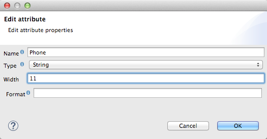 -
As you can see, the field’s width is 11 characters. Change the width to 7, then click OK. The final input field properties should correspond to the table below.
Name Type Width LastName
string
10
FirstName
string
10
PhoneNo
string
7
Country
string
3
EmployeeNo
string
3
-
We will now create the additional fields. In the Input pane, right-click the top-level element (in this case,
fwtest), then select Add Field.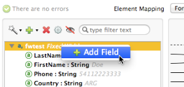 -
Using this procedure, add the following fields:
Name
Type
Width
CountryCode
string
2
AreaCode
string
2
-
The new fields that you add appear at the bottom of the Input pane, as if they were the last fields in the input file. You need to move them up to their proper place, after the
FirstNameinput field. To do so, right-click the desired field, then select Move Field Up.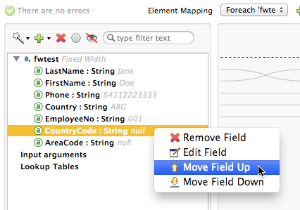 -
Ensure that the input fields appear in the following order:
LastName,FirstName,CountryCode,AreaCode,Phone,Country,EmployeeNo.
At this point, we have finished modifying the input fields for the new mapping.
Modifying the Output Fields
Now we will modify the output fields to include the new input fields. DataMapper provides a handy shortcut for this: the Recreate Metadata From Input function.
-
In the Output pane, click the Infer Metadata icon 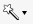 , then select Re-Create Metadata From Input.
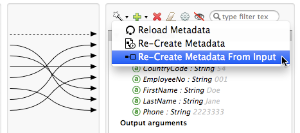
DataMapper will automatically recreate the output metadata and display the new mapping, as shown below.
As you can see, the new input fields have been mapped to their corresponding output fields.
Testing the Mapping
As with the previous example, test the mapping by either running the application and generating an output file, or by using DataMapper’s Preview feature. The code below demonstrates the resulting JSON output. DataMapper has split the original Phone field into the fields CountryCode, AreaCode and Phone. DataMapper performed field splitting according to the lengths and field order provided in the Input Properties, and mapped them to the JSON format specified in the Output Properties.
[ {
"LastName" : "Jane",
"FirstName" : "Doe",
"CountryCode" : "54",
"AreaCode" : "11",
"Phone" : "2223333",
"Country" : "ARG",
"EmployeeNo" : "001"
}, {
"LastName" : "John",
"FirstName" : "Doe",
"CountryCode" : "54",
"AreaCode" : "11",
"Phone" : "2223333",
"Country" : "ARG",
"EmployeeNo" : "002"
} ]